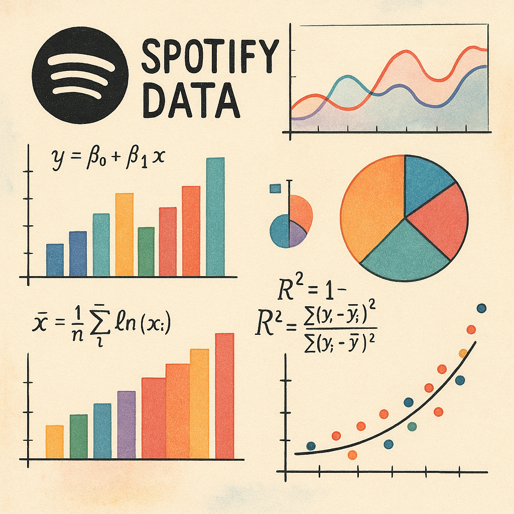

EDA of Spotify Top 50 Hits
Exploratory data analysis of Lithuania's suicide counts and rates from 2001 to 2024.
Overview
This EDA explores Spotify’s top 50 most-streamed tracks of 2020, analyzing audio features like energy, danceability, and popularity. Dataset available on Kaggle.
Key Highlights
The most popular artists were Billie Eilish, Dua Lipa, and Travis Scott with 3 songs in the list each.
- The genre distribution in the list.
- The correlation analysis of the features.

Figure 2: Pearson's R correlation coefficient heatmap.
- The correlation analysis of the features.
- The distribution of features across genres.
Figure 4: Acousticness in different genres.
Figure 5: Loudness in different genres.